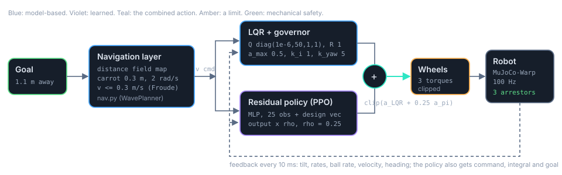
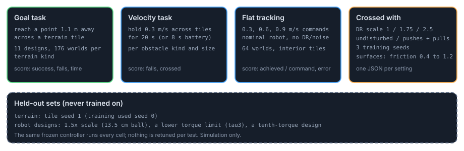

How the whole stack fits together
Four pictures explain the system: how a goal becomes wheel torques, how a depth sensor becomes a map, how the learned part is trained, and how every controller is judged. Click or tab to any block for what it does, its numbers and where in the repository it lives. Everything here is simulation; no hardware is involved.
In short
- A navigation layer turns a goal and a map into a smooth velocity command. The balance controller never sees the map.
- The balance controller is an LQR on the derived planar model plus a learned residual with authority 0.25: applied action = clip(aLQR + 0.25 apolicy). The current recommendation (S112, S113) switches the authority between 0.15 while cruising and 0.3 when manoeuvring, with a goal dead band, and puts a motion layer between the navigation layer and the controller (results, chapter 10b).
- The robot carries three passive ball arrestors; they, not the controller, fixed most falls.
- The policy is trained on 4096 GPU worlds, 11 robot designs, wide randomisation, pushes and pulls, with a critic that sees more than the policy.
- Every controller is scored on the same goal, velocity and flat tests, at three randomisation scales, with and without disturbances, on three seeds, and on held-out terrain and designs.
From a goal to wheel torques
Think of three people. A navigator with a map who says where to go next and how fast. A trained athlete who keeps the robot upright and tracks that speed. And a cage of small rollers that stops the athlete slipping off the ball. The navigator never touches the wheels; the athlete never sees the map. The picture reads left to right.

Tap a block for its details. On a phone the stack is drawn top to bottom.
How the pieces talk
- Goal to command. Every 10 ms the navigation layer outputs a planar velocity (direction and speed). Without a map it is simply the direction to the goal at min(0.3 m/s, 1.5 × distance), Froude-scaled for the design. With a map it is the carrot follower's smooth command (physics page, section 9).
- Command to two actions. The LQR passes the command through its governor and integral and computes a wheel action from the measured tilt, rates and ball rate. In parallel the policy, an MLP, maps 25 observation values and the design vector to a residual action.
- Sum and clip. applied = clip(aLQR + 0.25 apolicy). The LQR always keeps at least three quarters of the say. With adaptive authority the factor is 0.15 while cruising and rises to 0.3 for about half a second when the command changes fast, nears zero or the body tilts beyond 4 degrees (S112).
- Torques and physics. The three normalised commands become torques at the wheel limit and the GPU simulator advances the robot. The new state is read back: the LQR sees tilt, rates, ball rate and velocity; the policy sees the same plus its command, heading, velocity integral and goal.
From ranges to a map the planner can descend
A time-of-flight sensor does not see blocks; it returns a grid of distances. Five deterministic steps turn those numbers into a field that tells the robot, in every cell, how far it is from the goal by a path that avoids what it has seen. None of these steps is learned, and the balance controller never receives any of them.

Tap a block for its details.
What was measured, same planner and controller throughout
| Hazard source | reached goal | falls | rolled onto a block |
|---|---|---|---|
| blind (straight to the goal) | 0.09 | 0.91 | 0.74 |
| perfect map, jerky wavefront planner | 0.91 | 0.09 | 0.00 |
| ToF 18×14 on the head, jerky planner | 0.85 | 0.11 | 0.02 |
| ToF 18×14, smooth follower, sensor along the command | 0.72 | 0.22 | 0.16 |
| ToF 18×14, smooth follower, sensor aimed at the planner target | 0.78 | 0.16 | 0.03 |
| two ToF on the body cones (worst mount) | 0.58 | 0.35 | 0.25 |
| perfect map, with pushes and pulls | 0.55 to 0.58 | 0.41 to 0.44 | 0.13 to 0.20 |
528 worlds (48 per design, 11 designs), 20 s episodes, randomisation scale 1, frozen recommended controller. Source: tracking_study_log.md S89, S90, S91
4096 robots, each in its own slightly different world
The learned residual is trained by trial and error on a GPU simulator that runs thousands of robots at once. Each one has a different body, different friction, different pushes and a different patch of ground, so the policy cannot memorise one robot. The trick that makes this work with realistic sensing is an asymmetric critic: the network that judges outcomes during training is allowed to see the hidden truth; the network that acts is not.

Tap a block for its details.
What the policy sees, and does not see
The policy sees
- body orientation (rotation vector) and angular velocity
- linear velocity and the three wheel rates
- its previous applied action
- the command, its heading as sine and cosine, the integrated velocity error
- the goal direction, distance and flag
- a 6-value description of which robot design it is driving
25 + 6 values at 100 Hz, with sensor noise. All available on a real robot.
The policy does not see
- the terrain or any map
- the floor friction or softness
- the masses, torque scale or damping drawn this episode
- when or how hard it is being pushed
- the LQR's own action (it only feels its effect)
It must infer all of this from how the robot moves.
Only the critic sees
- floor friction and softness
- mass and torque scales, wheel damping
- a height scan of the ground ahead
- the design vector
Privileged, training only. Discarded after training.
| Ingredient | Setting | Why |
|---|---|---|
| Worlds | 4096, MuJoCo-Warp float32, 100 Hz | enough variety per update to average over designs, surfaces and pushes |
| Designs | 11, each with its own LQR | a single policy for a family of bodies; design vector tells it which |
| Randomisation | scale 1.75: mass, friction, torque, damping, latency, noise | robustness to model error; evaluated at 1, 1.75 and 2.5 |
| Pushes | 5 to 20 N for 50 ms, every 2 to 4 s, scaled with weight | impulsive disturbances |
| Pulls | 3 to 12 N for 0.5 to 2 s, every 4 to 10 s | sustained disturbances; present in 58 percent of disturbed falls before the arrestors (S79) |
| Arrestors | 3 rollers, 8 mm, 100 deg, zero gap | the body stays on the ball; trained and evaluated with them |
| Authority | 0.25; now adaptive 0.15 / 0.3 with a goal dead band | 0.25 is the measured knee between tracking and robustness (S83); adaptive authority gave the fewest falls at goals and in the battery of any variant (S112, S113) |
| Motion layer | commands shaped by motion_ref.py in training and at run time, half of the velocity commands curving | bolted on to an unchanged policy it made arrival worse (S106); trained with, it costs nothing and improves arrival and hold (S110, S111) |
| Steps | 200M | 400M gave no gain (S84); for the current recipe 400M trades terrain goals for flat arrival and brings back goal hunting (S115) |
Sources: train_dev.py BRIEF fact sheet tracking_study_log.md S79, S83, S84, S106, S110 to S115
One protocol for every controller
A result is only as good as the test that produced it, and several early results on this project did not survive their tests. The current protocol runs the same frozen controller through the same cells, with every setting written into the file name, and keeps a few sets the controller has never been trained on.

Tap a block for its details.
Headline numbers of the recommended controller
| Test | current: adaptive 0.15 / 0.3 + motion layer, arrestors (g34) | LQR + residual 0.25, arrestors | same, no arrestors | pure learning |
|---|---|---|---|---|
| flat tracking, achieved / command up to 0.9 m/s | 0.96 to 1.06 | 0.99 to 1.01 | 0.96 to 1.00 | 0.54 to 0.66 |
| goal success, undisturbed | 0.77 to 0.79 | 0.71 to 0.76 | 0.58 to 0.60 | 0.44 to 0.51 |
| goal success, pushes and pulls | 0.51 to 0.52 | 0.42 to 0.44 | 0.29 to 0.30 | 0.26 to 0.27 |
| held-out 1.5x robot, goal success | not measured | 0.61 to 0.71 | 0.09 to 0.15 |
Engine: MuJoCo-Warp float32 GPU. Randomisation and observation noise: on at scale 1 for the goal rows, off for flat tracking. Three seeds per controller column. The current column (g34) is at free-rolling friction 0.01; the 0.25 column is the earlier g18 family at 0.001 (S84); the no-arrestor column is its predecessor (authority 0.5, S80); pure learning rows are without arrestors. Sources: BRIEF fact sheet tracking_study_log.md S80, S83, S84, S85-R, S113. Full chapter-by-chapter results are on the results page.
Lessons that shaped the protocol
- Expose every world to the feature. 8 s episodes made slow robots look safe because they never reached the obstacle; the velocity task now runs 20 s (S87).
- Record where failures happen. Robots driving off the edge of the height field were counted as falls; the flat test now uses interior tiles and logs the fall position (S92).
- Name the reference. Held-out designs were once described relative to the wrong reference design; the design vector is now always relative to the nominal robot (S85-R).
- Settle before you measure. Arrestors placed at the unloaded reset pose wedged the ball; they are placed at the pose the robot settles into under gravity (S79).
What this replaced
The first year of the project ran on a CPU simulator with a handful of worker processes, Stable-Baselines3 PPO and a Gymnasium environment, and it compared five controllers: pure LQR, pure PPO, PPO with an outer velocity integral, a fixed small residual, and a learned gate. Those experiments established that a learned tracker alone has a steady-state gain below one, that the LQR is the right core at low speed, and that a residual must be bounded. The GPU stack on this page is their successor. Randomised results from before the engine fix are void (S69, S70) and are not quoted anywhere on this site.
The chapter-by-chapter story, including the honest nulls, is on the story page and the results page; the physics behind every block is on the physics page.